← Overview · 3D gallery · GitHub
Asset library
9 assets composed into one USD stage, scan2usd_library.usda. Each asset is a payload
(loaded on demand) with two variant sets authored in the library layer, so the asset files are never edited:
collision (decomposed · convex_hull · bounding_box) and friction (measured · low · high).
Total 7.44 kg, 242 convex colliders in the default variant.
scan2usd library output/assets -o library.usda # build
from pxr import Usd
stage = Usd.Stage.Open("library.usda", Usd.Stage.LoadNone) # instant: nothing loaded yet
mug = stage.GetPrimAtPath("/Library/ceramic_mug")
stage.Load(mug.GetPath()) # load just this asset
mug.GetVariantSet("collision").SetVariantSelection("convex_hull")
mug.GetVariantSet("friction").SetVariantSelection("low")
Why variants: the same scene can be simulated with cheap or accurate contact geometry (ablations, speed vs. fidelity), and contact properties can be randomized for robust policies, without copying assets.
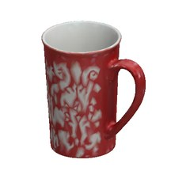
Printed mug
| size | 12.6 × 9.1 × 13.5 cm |
| mass | 466 g |
| inertia | 689 · 1032 · 1168 g·cm² |
| friction | μs 0.60 · μd 0.50 |
| prim | /Library/ace_coffee_mug_kristen_16_oz_cup |
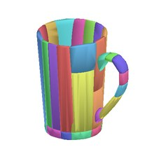
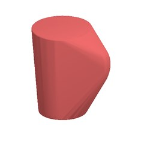
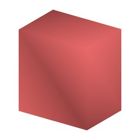
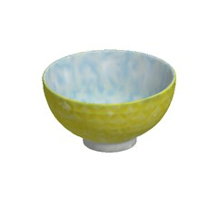
Ceramic bowl
| size | 11.3 × 11.5 × 6.2 cm |
| mass | 192 g |
| inertia | 238 · 242 · 377 g·cm² |
| friction | μs 0.60 · μd 0.50 |
| prim | /Library/cole_hardware_bowl_scirocco_yellowblue |
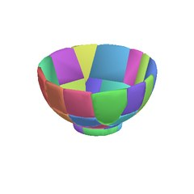
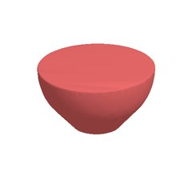
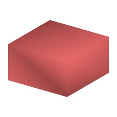
Android figure
| size | 7.0 × 4.6 × 7.9 cm |
| mass | 104 g |
| inertia | 28 · 44 · 48 g·cm² |
| friction | μs 0.40 · μd 0.30 |
| prim | /Library/great_dinos_triceratops_toy |
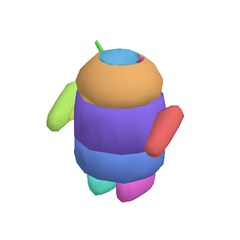
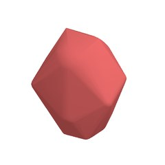
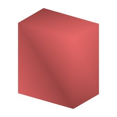
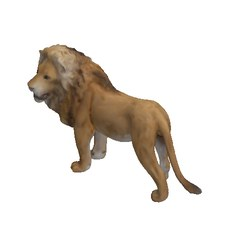
Lion figure
| size | 11.5 × 4.2 × 7.0 cm |
| mass | 55 g |
| inertia | 15 · 61 · 67 g·cm² |
| friction | μs 0.40 · μd 0.30 |
| prim | /Library/schleich_lion_action_figure |
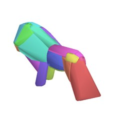
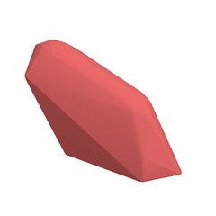
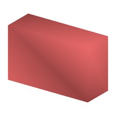
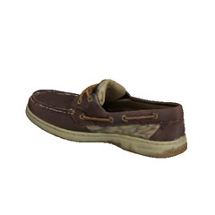
Boat shoe
| size | 24.9 × 9.0 × 9.0 cm |
| mass | 653 g |
| inertia | 515 · 2925 · 3018 g·cm² |
| friction | μs 1.00 · μd 0.80 |
| prim | /Library/womens_bluefish_2eye_boat_shoe_in_tan |
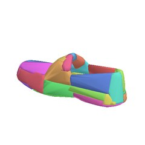
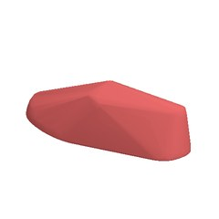
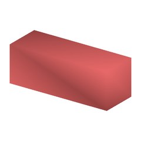
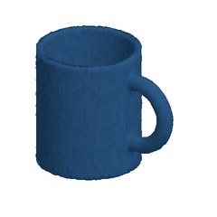
Ceramic mug (synthetic scan)
| size | 12.0 × 8.2 × 9.6 cm |
| mass | 372 g |
| inertia | 536 · 571 · 653 g·cm² |
| friction | μs 0.60 · μd 0.50 |
| prim | /Library/ceramic_mug |
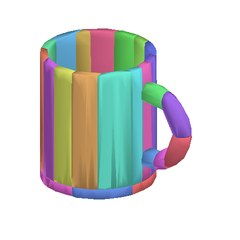
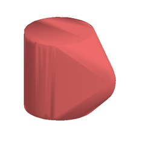
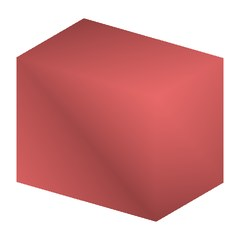
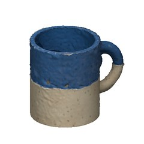
Speckled mug (78 photos → USD)
| size | 8.8 × 11.6 × 9.6 cm |
| mass | 436 g |
| inertia | 657 · 689 · 800 g·cm² |
| friction | μs 0.60 · μd 0.50 |
| prim | /Library/speckled_mug |
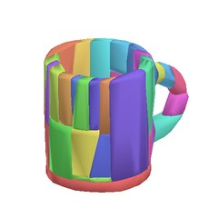
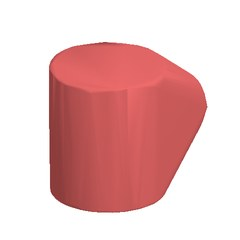
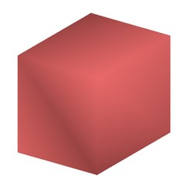
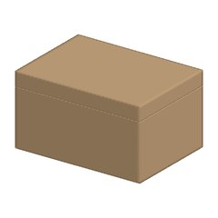
Hinged box (articulated)
| size | 18.0 × 13.0 × 10.0 cm |
| mass | 539 g |
| inertia | articulated (per body) |
| friction | μs 0.50 · μd 0.40 |
| prim | /Library/keepsake_box |
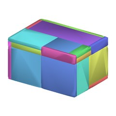
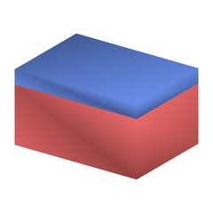

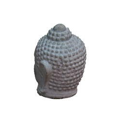
Buddha head (67 real photos)
| size | 15.2 × 16.2 × 20.0 cm |
| mass | 4624 g |
| inertia | 9024 · 13967 · 14135 g·cm² |
| friction | μs 0.70 · μd 0.60 |
| prim | /Library/buddha_head |
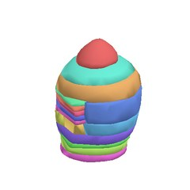
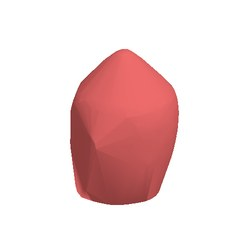
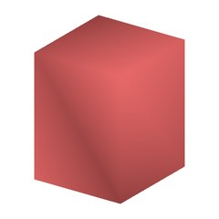
Renders: Scan2USD's numpy preview renderer. Third-party meshes: Google Scanned Objects (CC-BY 4.0); Buddha: AliceVision dataset (CC-BY 4.0).